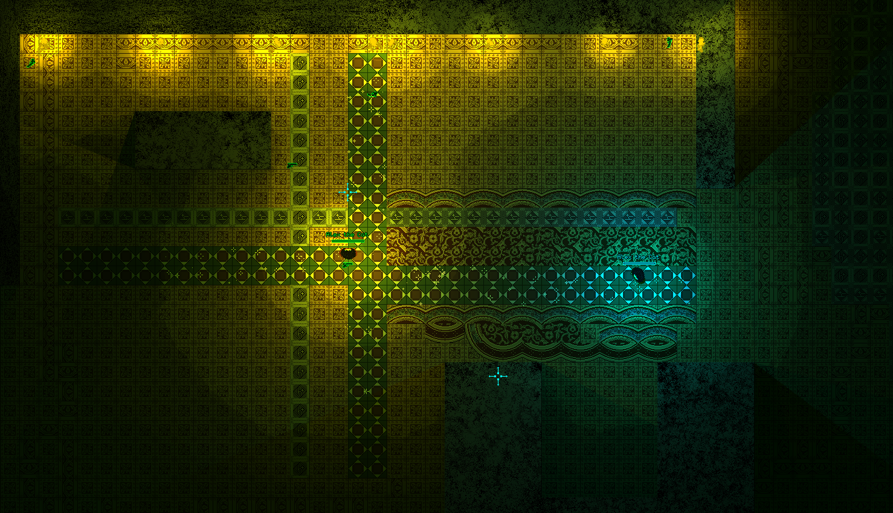

Hypersomnia is an upcoming 2D multiplayer futuristic universe with elements of fast-paced shooter, stealth and role-playing game.
Set in a hypothetical afterlife reality, it is meant to provide joy through altruistic behaviours and fulfillment of elaborate social roles, including, but not limited to, sowing panic as a traitor to benevolent ones.
The project is being brought to life with mere forces of a single man;
he holds the project in his highest esteem and is well aware it will necessarily take months of intense, wholehearted labour.
As of currently, the project takes advantage of the following technologies:
* C++
* OpenGL
* Box2D // physics simulation engine
* Lua with Luabind // mostly configuration
* RakNet // networking engine
* polypartition // polygon partitioning library
* FreeType // text rendering
The rest being the craftsmanship of the author.
There is yet no official lore apart from a huge Game Design Document whose assumptions are being slowly, yet steadily, fulfilled.
The stories will be written down when all else is done.
// Chosen in-game pictures
// Pixel cathedral, this is kind of similar to how the game will look like in the final phase, however the codebase for this version is mostly obsolete

// Simple shooting, vehicles and inventory test

// Thorough test of weapon attachments

[See more]
// Author
I am an independent developer with a lifelong interest in study and practice of engineering simulations.
I was born in 1995, involved myself deeply in programming by 2008 and have been enamoured with this activity ever since.
You can find me on StackExchange and all my former projects here on GitHub.
Or just contact me via e-mail.
I envision a server populated with players of my game,
a warm processing unit that continuously propagates schemata I've designed;
an entropic entity that tirelessly exchanges state of my macrocosm with hundreds of individuals across the whole world, whilst scattering cyan neons across the dark bedroom.
When I fall asleep with this machine placed under my pillow, listening to the heartbeat of my universe, my life will be complete.
// Join
If you wish to contribute to development of Hypersomnia, you are free to fork Augmentations (the codebase) and Hypersomnia (mostly assets and configs).
I currently do not distribute up-to-date executables, but it is trivial to build and launch the current version using instructions here.
If you dream about creating an entirely new mechanic, I recommend that you be familiar with component-based entity architecture beforehand.
Better yet, tell me about your plans! Together we can deal with the problems more swiftly.
In any case, I am sure to consider every pull request.
Or if you just can't wait to utter some brilliant suggestions regarding the game or the website, please do so, too!
Contact me.
// with daily record of progress and new features